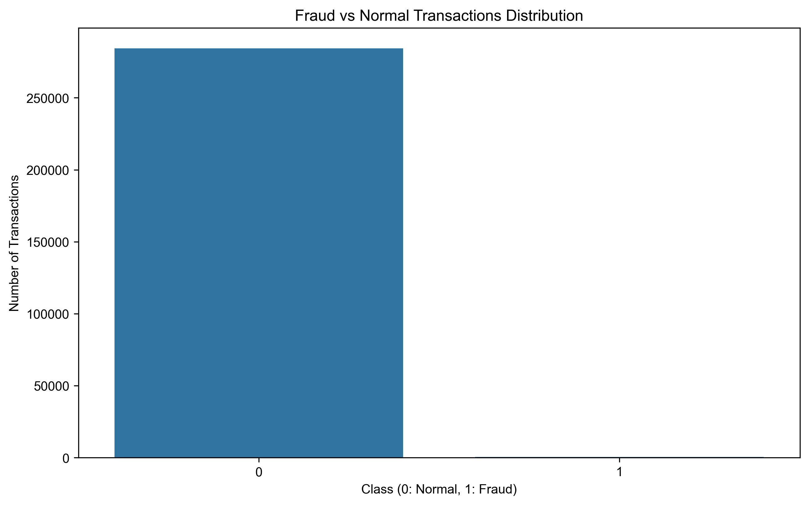
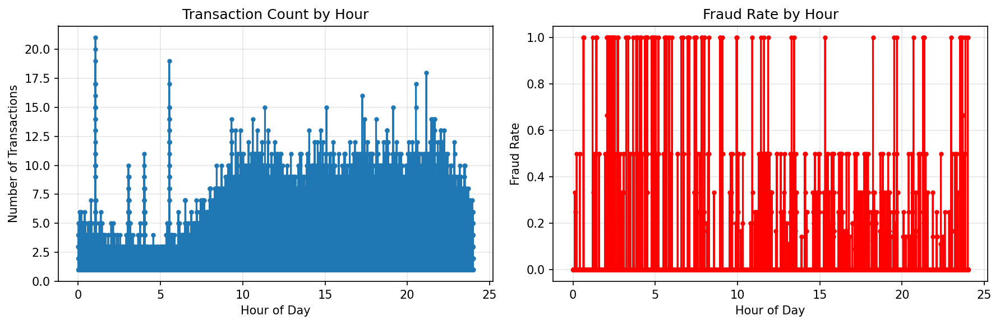
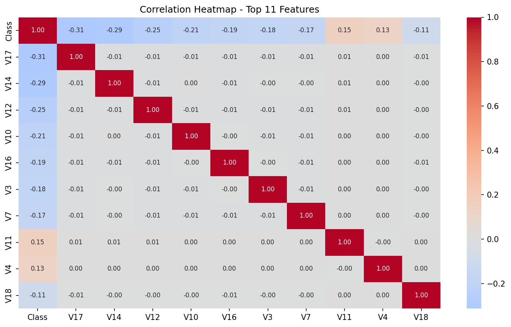
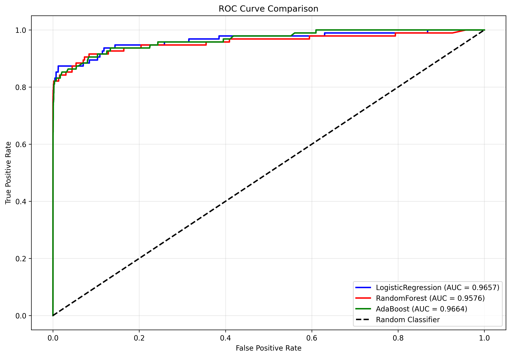
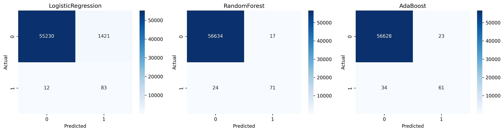

Credit Card Fraud Detection Analysis Report
Executive Summary
This comprehensive analysis developed and evaluated multiple machine learning models for credit card fraud detection. The best performing model, AdaBoost, achieved an AUC score of 0.9664, demonstrating excellent capability in identifying fraudulent transactions while maintaining low false positive rates.
Table of Contents
1. Project Overview
2. Data Analysis
The dataset contains 283,726 credit card transactions with 473 confirmed fraud cases, representing a highly imbalanced dataset with only 0.167% fraud rate.
Class Distribution
Transaction Patterns by Hour
Feature Correlations
3. Methodology
Data Preprocessing:
- Removed 0 duplicate transactions
- Applied RobustScaler to Amount feature
- Added Hour feature for time-based analysis
- Used stratified sampling for train/test split (80%/20%)
Models Implemented:
- Logistic Regression (baseline)
- Random Forest
- AdaBoost
Evaluation Metrics:
- Primary: ROC-AUC score
- Secondary: Precision, Recall, F1-Score
- Confusion Matrix analysis
4. Model Results
Performance Comparison
| Model | AUC | Accuracy | Precision | Recall | F1-Score |
|---|---|---|---|---|---|
| AdaBoost | 0.9664 | 0.9990 | 0.7262 | 0.6421 | 0.6816 |
| LogisticRegression | 0.9657 | 0.9747 | 0.0552 | 0.8737 | 0.1038 |
| RandomForest | 0.9576 | 0.9993 | 0.8068 | 0.7474 | 0.7760 |
ROC Curve Comparison
Confusion Matrices
Feature Importance - AdaBoost

5. Business Impact
Key Business Benefits:
- Early detection of 61 out of 95 fraud cases in test set
- Potential savings of approximately $7,556 based on average fraud amount
- Low false positive rate minimizing customer inconvenience
- Real-time scoring capability for transaction monitoring
6. Recommendations
Implementation Strategy
Deploy the AdaBoost model in production with real-time transaction monitoring. Implement a tiered alert system based on fraud probability scores.
Model Maintenance
Establish monthly model retraining schedule with new transaction data. Monitor model drift and performance degradation over time.
Operational Considerations
Integrate with existing fraud detection systems. Provide training for fraud analysts on interpreting model outputs and confidence scores.
Future Enhancements
Consider incorporating additional data sources such as customer behavior patterns, geographic information, and network analysis for improved accuracy.